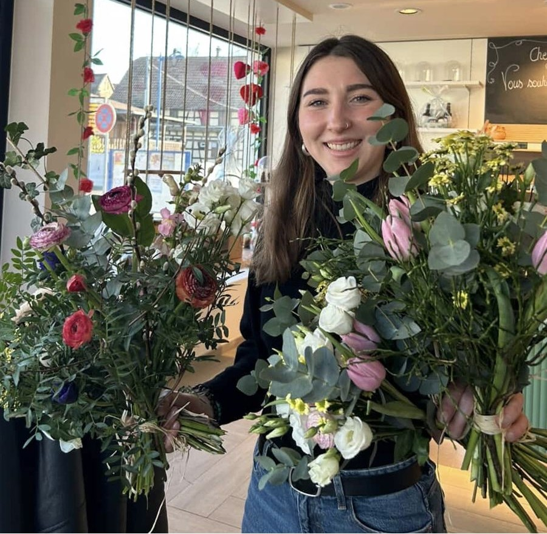
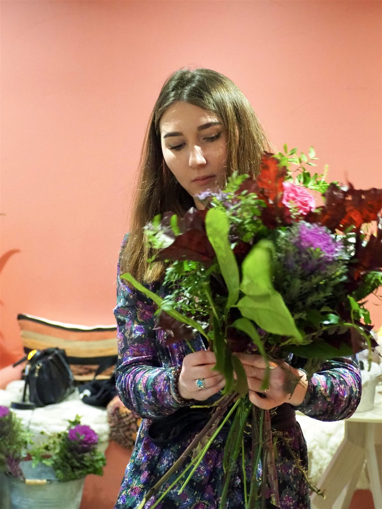
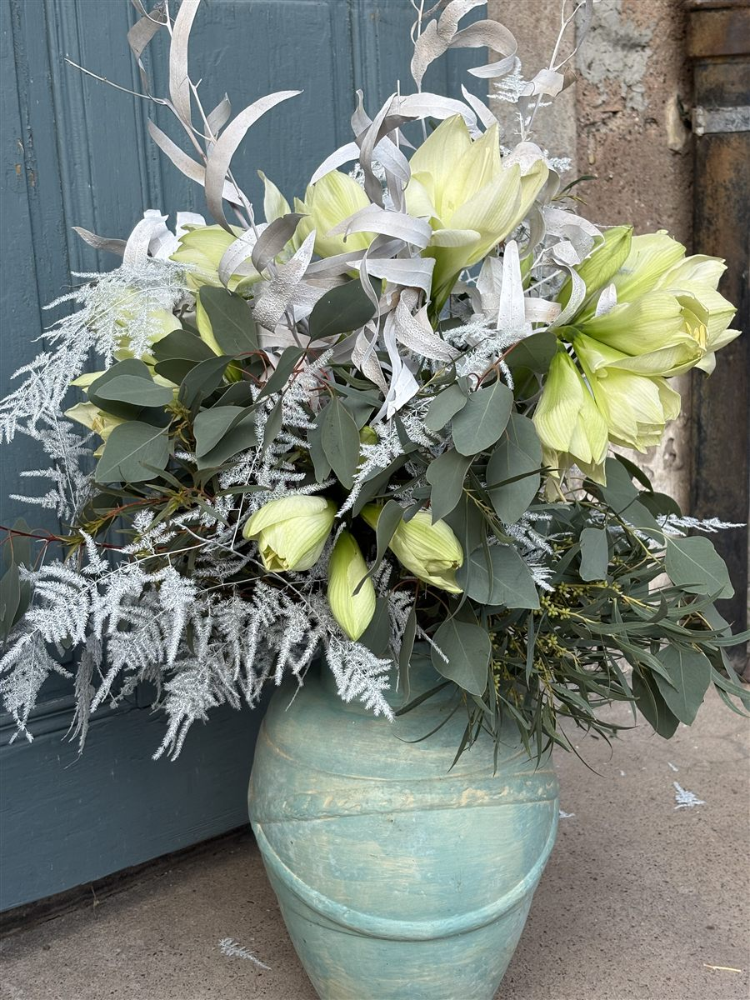
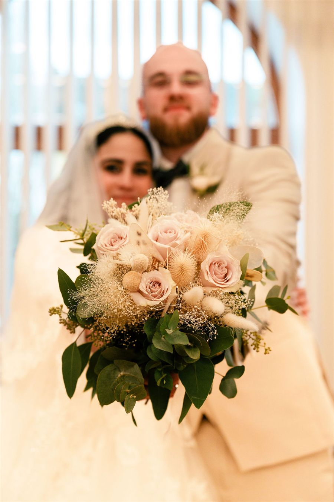

L'autoportrait floral est un atelier de connaissance de soi profonde. Il commence par un temps d'introspection guidée : quels adjectifs me décrivent ? Quelles matières me ressemblent ? Quels végétaux m'attirent instinctivement ?
À partir de ces éléments relevés, vous réalisez avec les végétaux et accessoires à disposition un bouquet le plus fidèle possible à ce portrait — couleurs, textures, formes, odeurs. Chaque fleur choisie est un miroir de vous-même.
C'est un atelier à la fois doux et révélateur, qui permet de se reconnecter à soi dans un espace bienveillant et créatif. Vous repartez avec votre bouquet et une vision nouvelle de ce qui vous définit.



